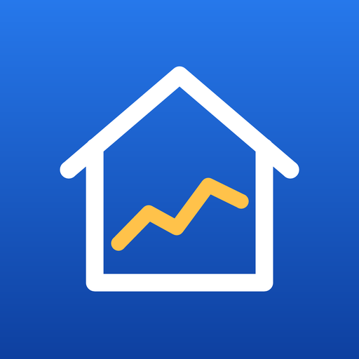

HomeHistory
Your Apple Home sensors’ history, recorded by a spare iPad or Mac.
Questions people ask
What do I need?
Accessories in Apple Home, and an iPad with iPadOS 16 or later or a Mac with macOS 14 or later to be the Hub, the device that records. Your iPhone and other devices signed in to the same iCloud account show the history.
Why does the app stay open on the iPad?
HomeKit gives apps no history, so the Hub keeps it, and iPadOS stops apps in the background. HomeHistory records while it is open on the iPad’s screen, keeps the screen on, and can dim it or black it out at night (Settings › Wall Display). Turn on Guided Access and set its Display Auto-Lock to Never so the iPad stays in the app; the Hub’s buttons then lock behind a two-second press.
And on a Mac?
A Mac records while HomeHistory runs, with its window behind other apps. While the Mac sleeps it records nothing; charts show that time as a gap.
Which accessories and readings work?
These: temperature, humidity, light level, air quality, CO₂, PM2.5, battery level, doors and windows (contact sensors), motion, occupancy, locks, lights, switches and outlets turned on or off, brightness, and a thermostat’s target temperature. Other things Apple Home shows are not recorded, for example leak, smoke and carbon-monoxide alarms, garage doors, blinds, security systems, and the on/off of most fans, air purifiers, heaters and humidifiers. Nor are readings that a maker shows only in its own app (such as some plugs’ power use).
Where is my data?
On your devices and in the app’s private database in your iCloud account, which the developer cannot see. HomeHistory has no server and no account, and its App Store privacy label is “Data Not Collected”. In the app, Settings › About › Transparency explains how to check this yourself.
What does HomeHistory Full add?
Free shows the last 7 days, records with one Hub, and shows one home and two dashboard rooms. Full is a one-time purchase: all your history (including what was recorded while you used the free version), any number of Hubs, every room and home, export to CSV and JSON, room comparison, and any series in widgets. No subscription; one purchase works on your iPhone, iPad and Mac, and Family Sharing shares it. The price is shown in the app.
How do I send a diagnostics bundle?
On the Hub, open the … menu, choose Diagnostics, then Export diagnostics JSON, and email the file. It holds the device model and system, the app version, the device’s role (Hub or Viewer), whether the app may use Home, how often the Hub reads, its time zone, a random identifier of this installation, an identifier for each series and what it measures (for example temperature, a door contact or a lock), grouped by accessory, sample counts, when recording paused (accessory names replaced by a short code made from the name; someone who guesses a name could check it against the code), how much of the last 48 hours was recorded, counts and dates about its upkeep and iCloud sync, and any error notes the app logged. It holds no names of homes, rooms or accessories and no readings. Its time zone and times (of samples, gaps and the export) show roughly where you are and your home’s daily rhythm. It leaves your device only if you choose to share it.
How was it made?
By one developer working with an AI coding assistant, Claude by Anthropic, which wrote the code, its tests, the translations, the program that draws the app icon, the App Store texts and these pages. The AI is not part of the app and never sees your home. The room photos in some screenshots are AI-generated; the app screens are real. The Transparency page in the app has the details.
Contact
Write to xufei547@gmail.com. Read the privacy policy.
Häufige Fragen
Was brauche ich?
Geräte in Apple Home und ein iPad ab iPadOS 16 oder einen Mac ab macOS 14 als Hub, das Gerät, das aufzeichnet. Dein iPhone und andere Geräte mit demselben iCloud-Account zeigen den Verlauf.
Warum bleibt die App auf dem iPad geöffnet?
HomeKit gibt Apps keinen Verlauf, also speichert ihn der Hub, und iPadOS hält Apps im Hintergrund an. HomeHistory zeichnet auf, solange es auf dem Bildschirm des iPads geöffnet ist, lässt den Bildschirm an und kann ihn nachts dimmen oder abdunkeln (Einstellungen › Wandanzeige). Schalte den geführten Zugriff ein und stelle dort die automatische Sperre auf „Nie“, damit das iPad in der App bleibt; die Tasten des Hubs sperren sich dann hinter einem Druck von zwei Sekunden.
Und auf dem Mac?
Ein Mac zeichnet auf, solange HomeHistory läuft, auch wenn sein Fenster hinter anderen Apps liegt. Während der Mac schläft, zeichnet er nichts auf; Diagramme zeigen diese Zeit als Lücke.
Welche Geräte und Werte funktionieren?
Diese: Temperatur, Luftfeuchtigkeit, Helligkeit, Luftqualität, CO₂, PM2,5, Batteriestand, Türen und Fenster (Kontaktsensoren), Bewegung, Anwesenheit, Schlösser, ein- oder ausgeschaltete Lampen, Schalter und Steckdosen, Lampenhelligkeit und die Zieltemperatur eines Thermostats. Anderes, das Apple Home zeigt, wird nicht aufgezeichnet, etwa Alarme für Wasserlecks, Rauch und Kohlenmonoxid, Garagentore, Jalousien, Sicherheitssysteme und das Ein und Aus der meisten Ventilatoren, Luftreiniger, Heizgeräte und Luftbefeuchter. Auch Werte, die ein Hersteller nur in seiner eigenen App zeigt (etwa der Stromverbrauch mancher Steckdosen), werden nicht aufgezeichnet.
Wo sind meine Daten?
Auf deinen Geräten und in der privaten Datenbank der App in deinem iCloud-Account, die der Entwickler nicht sehen kann. HomeHistory hat keinen Server und kein Konto, und sein Datenschutzetikett im App Store lautet „Keine Daten erfasst“. In der App erklärt Einstellungen › Über › Transparenz, wie du das selbst prüfst.
Was bringt HomeHistory Full?
Kostenlos siehst du die letzten 7 Tage, zeichnest mit einem Hub auf und siehst ein Zuhause und zwei Räume im Dashboard. Full ist ein einmaliger Kauf: dein ganzer Verlauf (auch was während der kostenlosen Version aufgezeichnet wurde), beliebig viele Hubs, alle Räume und Zuhause, Export als CSV und JSON, Raumvergleich und jede Messreihe in Widgets. Kein Abo; ein Kauf gilt auf iPhone, iPad und Mac, und die Familienfreigabe teilt ihn. Den Preis zeigt die App.
Wie schicke ich ein Diagnosepaket?
Öffne auf dem Hub das Menü …, wähle Diagnose und dann Diagnose-JSON exportieren, und schicke die Datei per E-Mail. Sie enthält Gerätemodell und System, App-Version, die Rolle des Geräts (Hub oder Viewer), ob die App Home nutzen darf, wie oft der Hub liest, seine Zeitzone, eine zufällige Kennung dieser Installation, für jede Messreihe eine Kennung und was sie misst (zum Beispiel Temperatur, ein Türkontakt oder ein Schloss), nach Gerät gruppiert, Anzahlen der Messwerte, wann die Aufzeichnung pausierte (Gerätenamen durch einen kurzen Code ersetzt, der aus dem Namen gebildet ist; wer einen Namen errät, kann ihn am Code prüfen), wie viel der letzten 48 Stunden aufgezeichnet wurde, Zahlen und Zeitpunkte zu Wartung und iCloud-Abgleich und alle Fehlerhinweise, die die App notiert hat. Sie enthält keine Namen von Zuhause, Räumen oder Geräten und keine Messwerte. Zeitzone und Zeitpunkte (der Messwerte, Lücken und des Exports) verraten grob, wo du wohnst, und den Tagesrhythmus deines Zuhauses. Die Datei verlässt dein Gerät nur, wenn du sie selbst teilst.
Wie ist die App entstanden?
Ein einzelner Entwickler hat sie mit einem KI-Programmierassistenten gemacht, Claude von Anthropic, der den Code, seine Tests, die Übersetzungen, das Programm, das das App-Symbol zeichnet, die App-Store-Texte und diese Seiten geschrieben hat. Die KI ist kein Teil der App und sieht dein Zuhause nie. Die Raumfotos in einigen Screenshots sind KI-generiert; die App-Bildschirme sind echt. Details stehen auf der Transparenzseite in der App.
Kontakt
Schreib an xufei547@gmail.com. Zur Datenschutzerklärung.
Veelgestelde vragen
Wat heb ik nodig?
Accessoires in Apple Home, en een iPad met iPadOS 16 of nieuwer of een Mac met macOS 14 of nieuwer als Hub, het apparaat dat opneemt. Je iPhone en andere apparaten met hetzelfde iCloud-account tonen de geschiedenis.
Waarom blijft de app open op de iPad?
HomeKit geeft apps geen geschiedenis, dus de Hub bewaart die, en iPadOS zet apps op de achtergrond stil. HomeHistory neemt op zolang het open is op het scherm van de iPad, houdt het scherm aan en kan het ’s nachts dimmen of zwart maken (Instellingen › Wandscherm). Zet Begeleide toegang aan en stel daar automatisch vergrendelen in op ‘Nooit’, zodat de iPad in de app blijft; de knoppen van de Hub zitten dan achter een druk van twee seconden.
En op een Mac?
Een Mac neemt op zolang HomeHistory draait, ook als het venster achter andere apps ligt. Terwijl de Mac slaapt, neemt hij niets op; grafieken tonen die tijd als een gat.
Welke accessoires en waarden werken?
Deze: temperatuur, luchtvochtigheid, lichtniveau, luchtkwaliteit, CO₂, PM2,5, batterijniveau, deuren en ramen (contactsensoren), beweging, aanwezigheid, sloten, lampen, schakelaars en stekkers die aan of uit staan, helderheid en de doeltemperatuur van een thermostaat. Andere dingen die Apple Home toont worden niet opgenomen, bijvoorbeeld alarmen voor lekkage, rook en koolmonoxide, garagedeuren, jaloezieën, beveiligingssystemen en het aan en uit van de meeste ventilatoren, luchtreinigers, kachels en luchtbevochtigers. Ook waarden die een fabrikant alleen in zijn eigen app toont (zoals het stroomverbruik van sommige stekkers) worden niet opgenomen.
Waar staan mijn gegevens?
Op je apparaten en in de privédatabase van de app in je iCloud-account, die de ontwikkelaar niet kan zien. HomeHistory heeft geen server en geen account, en het privacylabel in de App Store is ‘Er worden geen gegevens verzameld’. In de app legt Instellingen › Over › Transparantie uit hoe je dit zelf controleert.
Wat voegt HomeHistory Full toe?
Gratis toont de laatste 7 dagen, neemt op met één Hub en toont één woning en twee kamers op het dashboard. Full is een eenmalige aankoop: je hele geschiedenis (ook wat werd opgenomen terwijl je de gratis versie gebruikte), een onbeperkt aantal Hubs, alle kamers en woningen, exporteren naar CSV en JSON, kamers vergelijken en elke meetreeks in widgets. Geen abonnement; één aankoop werkt op je iPhone, iPad en Mac, en met Delen met gezin deel je hem. De prijs staat in de app.
Hoe stuur ik een diagnosebestand?
Open op de Hub het menu …, kies Diagnose en dan Diagnose-JSON exporteren, en mail het bestand. Het bevat het apparaatmodel en systeem, de appversie, de rol van het apparaat (Hub of Viewer), of de app Woning mag gebruiken, hoe vaak de Hub uitleest, de tijdzone, een willekeurig kenmerk van deze installatie, voor elke meetreeks een kenmerk en wat die meet (bijvoorbeeld temperatuur, een deurcontact of een slot), gegroepeerd per accessoire, aantallen metingen, wanneer de opname pauzeerde (namen van accessoires vervangen door een korte code die uit de naam is gemaakt; wie een naam raadt, kan hem aan de code toetsen), hoeveel van de laatste 48 uur is opgenomen, getallen en tijdstippen over onderhoud en iCloud-synchronisatie en alle foutmeldingen die de app heeft genoteerd. Het bevat geen namen van woningen, kamers of accessoires en geen meetwaarden. De tijdzone en de tijdstippen (van metingen, gaten en de export) laten ruwweg zien waar je woont en het dagritme van je huis. Het bestand verlaat je apparaat alleen als je het zelf deelt.
Hoe is het gemaakt?
Door één ontwikkelaar met een AI-programmeerassistent, Claude van Anthropic, die de code, de tests, de vertalingen, het programma dat het app-symbool tekent, de App Store-teksten en deze pagina's schreef. De AI is geen onderdeel van de app en ziet je huis nooit. De kamerfoto's in sommige schermafbeeldingen zijn door AI gemaakt; de appschermen zijn echt. De pagina Transparantie in de app geeft de details.
Contact
Schrijf naar xufei547@gmail.com. Lees het privacybeleid.
Questions fréquentes
De quoi ai-je besoin ?
D’accessoires dans Apple Home, et d’un iPad sous iPadOS 16 ou ultérieur ou d’un Mac sous macOS 14 ou ultérieur comme Hub, l’appareil qui enregistre. Votre iPhone et vos autres appareils connectés au même compte iCloud affichent l’historique.
Pourquoi l’app reste-t-elle ouverte sur l’iPad ?
HomeKit ne donne aucun historique aux apps, alors le Hub le garde, et iPadOS suspend les apps en arrière-plan. HomeHistory enregistre tant qu’il est ouvert à l’écran de l’iPad, garde l’écran allumé et peut l’assombrir ou l’éteindre visuellement la nuit (Réglages › Écran mural). Activez l’Accès guidé et réglez son verrouillage automatique sur « Jamais » pour que l’iPad reste dans l’app ; les boutons du Hub se verrouillent alors derrière un appui de deux secondes.
Et sur un Mac ?
Un Mac enregistre tant que HomeHistory tourne, même avec sa fenêtre derrière d’autres apps. Pendant que le Mac est en veille, il n’enregistre rien ; les graphiques montrent ce temps comme un trou.
Quels accessoires et quelles mesures fonctionnent ?
Ceux-ci : température, humidité, luminosité ambiante, qualité de l’air, CO₂, PM2,5, niveau de batterie, portes et fenêtres (capteurs de contact), mouvement, présence, serrures, lampes, interrupteurs et prises allumés ou éteints, intensité lumineuse et consigne de température d’un thermostat. Le reste de ce qu’affiche Apple Home n’est pas enregistré, par exemple les alarmes de fuite, de fumée et de monoxyde de carbone, les portes de garage, les stores, les systèmes de sécurité et la mise en marche de la plupart des ventilateurs, purificateurs d’air, radiateurs et humidificateurs. Les mesures qu’un fabricant ne montre que dans sa propre app (comme la consommation de certaines prises) ne le sont pas non plus.
Où sont mes données ?
Sur vos appareils et dans la base de données privée de l’app dans votre compte iCloud, que le développeur ne peut pas voir. HomeHistory n’a ni serveur ni compte, et son étiquette de confidentialité sur l’App Store est « Données non collectées ». Dans l’app, Réglages › À propos › Transparence explique comment le vérifier vous-même.
Qu’apporte HomeHistory Full ?
La version gratuite montre les 7 derniers jours, enregistre avec un seul Hub et affiche un domicile et deux pièces sur le tableau de bord. Full est un achat unique : tout votre historique (y compris ce qui a été enregistré pendant la version gratuite), autant de Hubs que vous voulez, toutes les pièces et tous les domiciles, l’export en CSV et JSON, la comparaison de pièces et n’importe quelle série dans les widgets. Pas d’abonnement ; un seul achat vaut sur iPhone, iPad et Mac, et le Partage familial le partage. Le prix est indiqué dans l’app.
Comment envoyer un fichier de diagnostic ?
Sur le Hub, ouvrez le menu …, choisissez Diagnostic puis Exporter le JSON de diagnostic, et envoyez le fichier par e-mail. Il contient le modèle et le système de l’appareil, la version de l’app, le rôle de l’appareil (Hub ou Viewer), l’autorisation d’accès à Maison, la fréquence de lecture du Hub, son fuseau horaire, un identifiant aléatoire de cette installation, pour chaque série un identifiant et ce qu’elle mesure (par exemple température, un contact de porte ou une serrure), regroupés par accessoire, le nombre de mesures, les moments où l’enregistrement s’est interrompu (noms d’accessoires remplacés par un code court tiré du nom ; qui devine un nom peut le vérifier avec le code), la part des dernières 48 heures enregistrée, des nombres et des dates sur l’entretien et la synchronisation iCloud, et les notes d’erreur que l’app a consignées. Il ne contient aucun nom de domicile, de pièce ou d’accessoire et aucune mesure. Le fuseau horaire et les horodatages (des mesures, des interruptions et de l’export) indiquent à peu près où vous habitez et le rythme quotidien de votre domicile. Le fichier ne quitte votre appareil que si vous choisissez de le partager.
Comment l’app a-t-elle été faite ?
Par un développeur seul avec un assistant de programmation à base d’IA, Claude d’Anthropic, qui a écrit le code, ses tests, les traductions, le programme qui dessine l’icône de l’app, les textes de l’App Store et ces pages. L’IA ne fait pas partie de l’app et ne voit jamais votre domicile. Les photos de pièces de certaines captures sont générées par IA ; les écrans de l’app sont réels. La page Transparence de l’app donne les détails.
Contact
Écrivez à xufei547@gmail.com. Lisez la politique de confidentialité.